拥有5年南昌广播电视台全媒体记者工作经验。从单条视频1400万+浏览量的《白鹭王国》，到累计全网传播破1.5亿的深度叙事，我擅长用技术理性辅助新闻专业主义的感性，打造现象级报道。如今，我带着对行业变革的思考转身向学，致力于在AI、XR、情绪传播等前沿领域，探索传媒产业的下一个增长极。我不满足于做单纯的"爆款制造者"，更致力于成为算法时代下，用学术逻辑解构流量、用商业思维重塑传媒的长期主义者。
专为新媒体人打造的轻量级生产力工作台。通过数据驱动的标题生成、全方位的文案合规性扫描以及多平台分发建议,我们将复杂的创作流程转化为简单高效的逻辑决策,助力每一位创作者在算法时代精准捕捉流量。纯静态运行,隐私数据不上传,让您的创作更安全、更高效。
VIEW PROJECT →这是一个连接算法逻辑与生活诗意的创作者实验室。我们通过「赛博抽签」从近百件生活小事中为你捕捉创作契机,辅以专业级合规扫描与标题引擎,将破碎的灵感瞬间转化为高质感的内容产出。在这里,每一次随机抽取,都是一场预谋已久的创作实验。
EXPLORE LAB →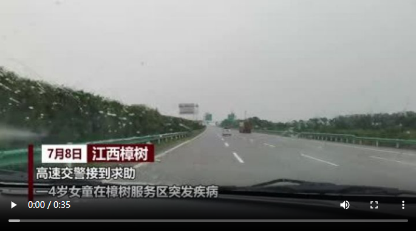
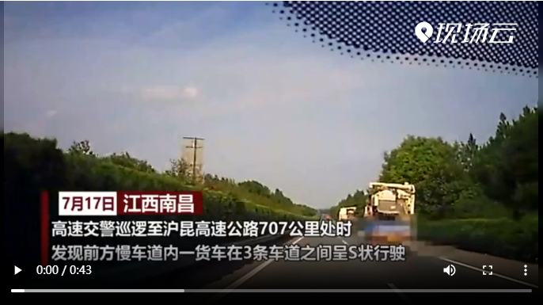
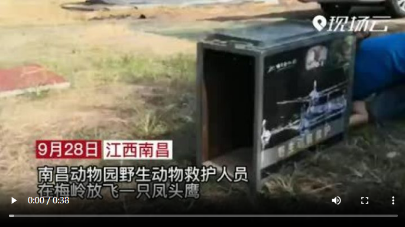
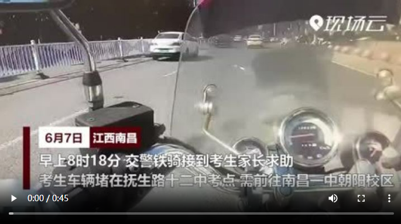
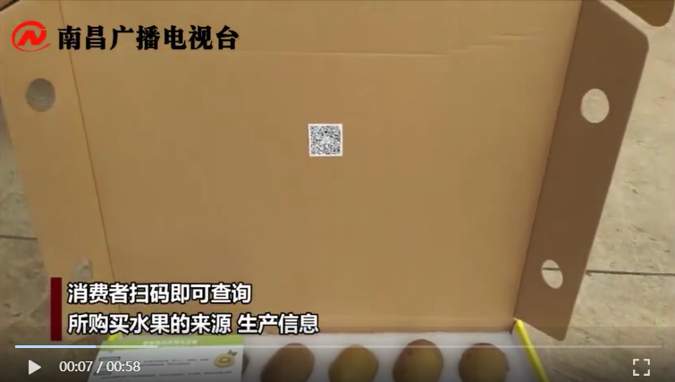
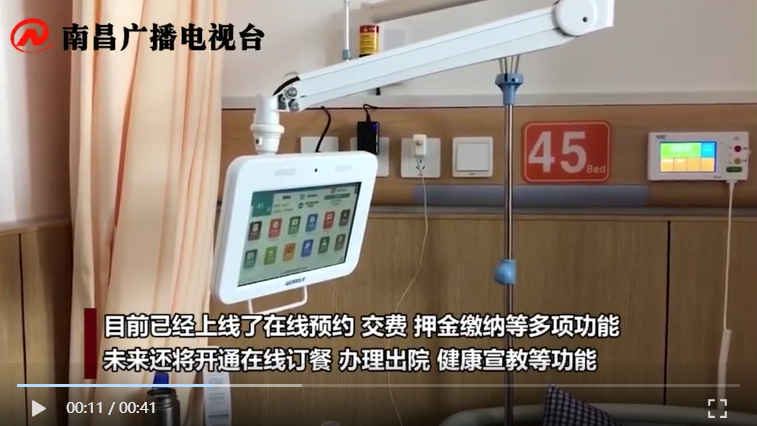
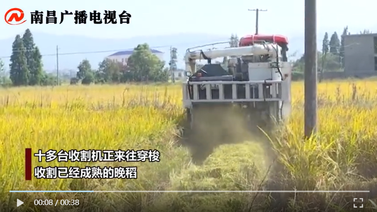
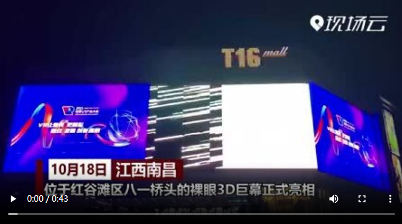
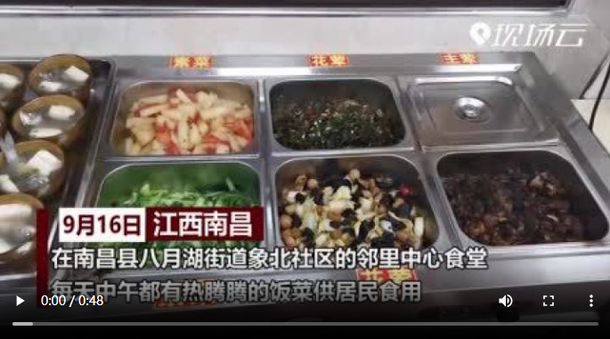
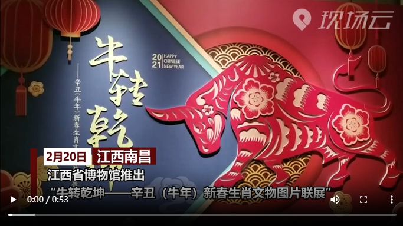
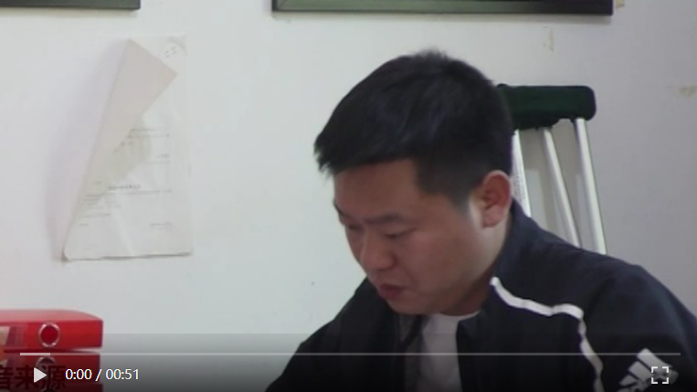
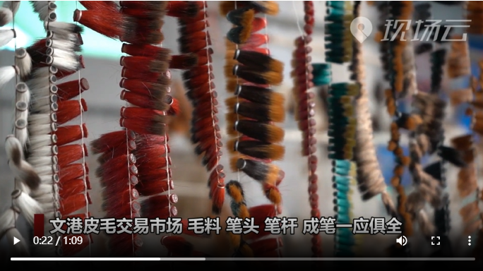
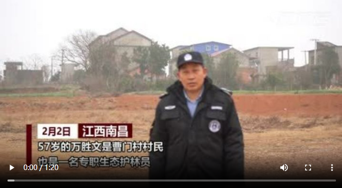
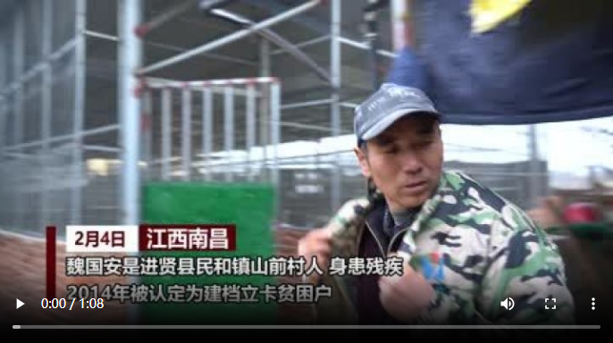


在调研了313位养宠人士后,我们听到了同一个声音:"我想带它去旅行,但我不敢。"很多时候,传统的OTA平台只给了我们一个冷冰冰的"允许携带宠物"标签。
为了解决这个"最后1公里"的信任问题,我们创立了宠游伴 (Petogether)。这是一个专注"人宠共生"生活方式的垂直社区。我们不做泛泛的信息聚合,而是通过严格的实地验证和短视频内容,为您过滤掉所有的"伪友好"。
我们不仅提供一张床位,更提供一套完整的出行解决方案。我们相信,旅行的意义,在于全家人整整齐齐,一个都不能少。

专为新媒体人打造的轻量级生产力工作台。通过数据驱动的标题生成、全方位的文案合规性扫描以及多平台分发建议,我们将复杂的创作流程转化为简单高效的逻辑决策,助力每一位创作者在算法时代精准捕捉流量。纯静态运行,隐私数据不上传,让您的创作更安全、更高效。
VIEW PROJECT →这是一个连接算法逻辑与生活诗意的创作者实验室。我们通过「赛博抽签」从近百件生活小事中为你捕捉创作契机,辅以专业级合规扫描与标题引擎,将破碎的灵感瞬间转化为高质感的内容产出。在这里,每一次随机抽取,都是一场预谋已久的创作实验。
EXPLORE LAB →在庆熙大学 MBA 的深造中,我试图构建一套从理论模型到商业变现的闭环思维体系
探索社交媒体平台中算法如何重构议题优先级,以及情绪作为传播货币的量化模型。 关注从"人找信息"到"信息找人"范式转变下的受众行为变迁。
结合定量分析(大数据挖掘、回归模型)与定性研究(深度访谈、话语分析), 构建"数据-理论-实践"的三角验证框架。
发表于《新闻与传播》期刊
湖北省人文社科重大项目(17ZD032)支持
新媒体迭代降世进一步加速了反转新闻现象的负效应,主要表现为社会公信力受损、社会焦虑加剧;媒体形象受损、可信度降低;当事人权利被侵、遭受多重打击三个方面,本文建议建立媒体新闻进度标识制度、健全政府应询机制、培养公众理性思维三种对策进行规避。
以"拆盲盒"直播(如"乌龟对对碰")为案例
运用情绪传播理论、使用与满足理论及社会认同理论
剖析了主播如何利用即时情绪反馈和虚拟社交互动激发消费欲望,以及由此引发的"赌徒心理"和冲动消费现象。探讨了在监管滞后背景下,盲盒直播对平台生态可能造成的损害,并呼吁对透明度和宣传真实性进行规范。
王泽恒.自媒体从0到1[J].成才与就业,2025,(23):54-55.
分享了从"起步翻车"到逐渐找准定位的过程,反思了传统媒体"层层把关"与自媒体"独自负责"的差异,为新媒体从业者提供实践经验参考。
针对ChatGPT等大语言模型重塑新闻生产流程的现状
探讨AI在政务报道中的实际效能与局限
通过对比新华社采写稿件与AI生成内容,研究指出AI在结构规范和语言流畅度上已接近专业水准,但在信息深度、价值判断及叙事灵活性上仍存在显著短板。提出了"人机协作"的分层模式——AI承担结构化、可视化等技术性任务,记者则回归价值判断与社会责任,以规避"完美陷阱",实现效率与专业主义的平衡。
湖北省第十一届"挑战杯"大学生课外学术作品竞赛获奖作品
以近十年"两会"报道方式的变化为例
纵向追踪 2010-2020 十年间主流媒体"两会"报道的话语变迁,揭示媒体议程设置对公众政治认知的长期影响机制。
期待与你探讨媒体策略、学术合作或任何有趣的想法
扫码添加微信(请备注来意)
下载完整简历